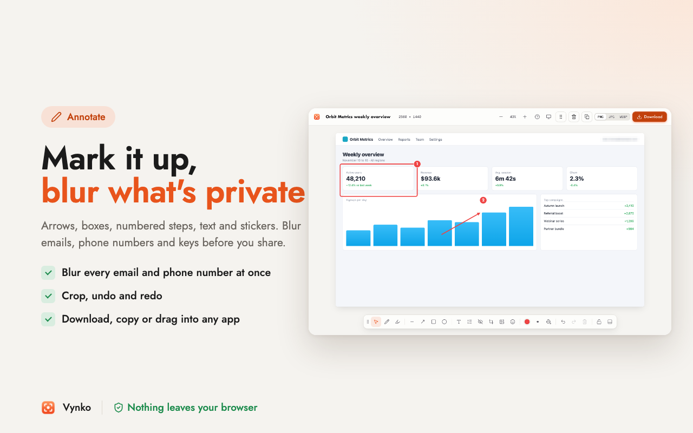

Captura una pestaña de Chrome con un clic
Captura justo lo que ves en la pestaña actual, sin las barras del navegador, y luego márcala, difumina los datos privados y guárdala o cópiala.
Añadir a Chrome, es gratis
Cómo se hace
- Añade Vynko a Chrome o Edge y fíjalo en la barra de herramientas.
- Abre la pestaña, haz clic en el icono de Vynko y elige Visible, o pulsa Alt+Shift+V.
- La captura se abre en el editor. Dibuja flechas, añade texto, difumina correos y números de teléfono, recorta y luego pulsa Ctrl/Cmd+S o Copiar.
Conviene saber
- Solo se captura el contenido de la página, nunca la barra de direcciones ni otras pestañas.
- Pon un temporizador de 3, 5 o 10 segundos para abrir antes un menú o un estado al pasar el ratón.
- Elige 100% para la máxima nitidez o 50% para un archivo de una cuarta parte del tamaño.
Preguntas
¿Vynko captura la barra de direcciones?
No. Visible captura solo la zona de la página de la pestaña actual.
¿Puedo copiar la captura en lugar de guardarla?
Sí. Pulsa Copiar en el editor y pégala en Slack, en un correo o en un documento.
¿Es gratis?
Sí. Sin marca de agua, sin cuenta y sin límites.
Más con Vynko
- Captura de pantalla de página completa de cualquier webVynko desplaza la página por ti, espera a que carguen las imágenes diferidas, oculta los encabezados fijos para que no se repitan y lo une todo en una sola imagen larga.
- Captura de pantalla de cualquier ventana o aplicaciónNo solo páginas web: captura otra ventana del navegador, una aplicación de escritorio o una pestaña que no estás viendo, con el selector para compartir de tu propio navegador.
- Captura de toda la pantallaCaptura todo lo que hay en un monitor: el escritorio, todas las ventanas y la barra de tareas, y luego recórtalo o anótalo en el editor.
- Graba tu pantalla con sonidoGraba una pestaña con su propio sonido, una ventana o toda la pantalla con el audio del sistema, y añade tu voz desde el micrófono, con barras de nivel en directo para ver que el sonido entra.
- Graba tu pantalla con la webcamAñade una burbuja redonda de webcam a las grabaciones de pestaña, ventana o pantalla, y luego muévela, cambia su tamaño o quítala en el editor.
- Todo lo que hace VynkoCapturas, grabación, edición, privacidad y todas las preguntas frecuentes.